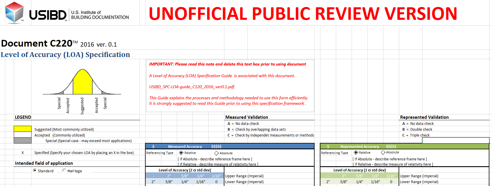

geomapi.tools.validationtools
validationtools - a Python library for validating objects.
- geomapi.tools.validationtools.plot_pano_positions(panos, colors=None, headings=False, z=False)
ppcs: list of PanoPoseCollection headings: boolean (default: False) - plots headings as vectors with size 1.
- geomapi.tools.validationtools.get_heading(orientation)
Heading measured as angle from x to y axis. In equirectangular format this is the center of the pano. Headings are always positive to simplify subsequent calculations.
See ‘https://docs.scipy.org/doc/scipy/reference/generated/scipy.spatial.transform.Rotation.html’
- geomapi.tools.validationtools.get_zenit(orientation)
Angle with the vertical
Parse Navvis csv file and output a set of PanoNodes
- Args:
csvPath (str): csv file path e.g. “D:/Data/pano/pano-poses.csv” panoPath (str, optional): _description_. Defaults to None. includeDepth (bool, optional): _description_. Defaults to True. depthPath (str, optional): _description_. Defaults to None. skip (int, optional): select every nth image from the xml. Defaults to None. filterByFolder (bool, optional): _description_. Defaults to True.
- Returns:
List[panonode.PanoNode]: a list of Panonodes
- geomapi.tools.validationtools.get_boundingbox_of_list_of_geometries(geometries: List[open3d.geometry.PointCloud]) array
Determines the global boundingbox of a group of Node containing geometries.
- Args:
geometries (List[Nodes]): list of Nodes containing a resource of which the boundingbox must be determined”
- Returns:
np.array[3x1]
- geomapi.tools.validationtools.match_BIM_points(sources: List[open3d.geometry.PointCloud], references: List[open3d.geometry.PointCloud], referenceIds=None, resolution: float = 0.02, t00: float = 0.15, wd: float = 0.62, wn: float = 0.38, threshold: float = 0.7) array
Determines the accuracy of a BIM model or object using a pointcloud
- Args:
sources(list(o3d.geometry.PointCloud)): The captured point clouds of the site.
references(list(o3d.geometry.PointCloud)): A pointcloud per reference object
referenceIds(list(str), optional): ID to be assigned to the points of the source point cloud
resolution (float, optional): voxel size for the a voxel downsampling before the analysis default 0.02m
t00(float): Threshold to which matching point will be searched default 0.15m
wd (float): weight of the distances in the decision function default 0.62
wn (float): weight of the normals in the decision function default 0.38
threshold (float): minimum value to be seen as a match, default 0.7
- Returns:
o3d.geometry.PointCloud: pointcloud used in the analysis linked to the identity and the distances of the points.
identityArray: array containing the matching label to the BIM for each point from the point cloud.
distances: array containing all the distances to the matching BIM for each point from the point cloud.
- geomapi.tools.validationtools.compute_LOA(identities, distances, t00: float = 0.15, t10: float = 0.1, t20: float = 0.05, t30: float = 0.015, byElement: bool = False, limit: float = 0.95)
Function which uses distances and a linked identity array to determine the LOA percentages
- Args:
identities (nx1-array): Array containing the identity of the distance between two matched points distances (nx1 array): Array containing the distances between two matched points t00 (float, optional): Maximum distance to be used in the analysis. Defaults to 0.15. t10 (float, optional): Upper bound of the LOA10 bracket. Defaults to 0.10. t20 (float, optional): Upper bound of the LOA20 bracket. Defaults to 0.05. t30 (float, optional): Upper bound of the LOA10 bracket. Defaults to 0.015. byElement (bool, optional): If the LOA must be computed per element of for the enitre cloud. Defaults to False. limit (float, optional): Percentage of inliers between two brackets needed to assign the LOA label. Defaults to 0.95.
- Returns:
LOA: List of LOAs per element (id, [LOA10, LOA20, LOA30], label)
- geomapi.tools.validationtools.plot_histogram(identities, distances, buckets: int = None, interval: float = None, dmax: float = 0.1, byElement=False, bins=None, directory=None, show=True)
Function to plot distances between the captured cloud and the reference cloud
- Args:
identities (nx1-array): Array containing the identity of the distance between two matched points distances (nx1 array): Array containing the distances between two matched points buckets (int, optional): Number of intervals the data will be seperated. Defaults to None. interval (float, optional): distance between the upper and lower bound of an interval. Defaults to None. dmax (float, optional): Distances higher then this distance will be ignored. Defaults to 0.1. byElement (bool, optional): If the LOA must be computed per element of for the enitre cloud. Defaults to False. bins (1xn array): Can be used to describe custom bin boundries (intervals must be equal). Defaults to None. directory (path, optional): When provided the histograms will be saved in the form of a PNG to this directory. Defaults to None. show (bool, optional): When set on true the histograms will be visualized. Defaults to True.
- geomapi.tools.validationtools.color_point_cloud_by_LOA(pointcloud: open3d.geometry.PointCloud, identities, distances, t00: float = 0.15, t10: float = 0.1, t20: float = 0.05, t30: float = 0.015, byElement: bool = False)
Colors each point by its computed LOA based on the distance between the matched points of the reference and the source cloud
- Args:
pointcloud (o3d.geometry.PointCloud): Point cloud from the LOA determination or pointcloud matching its the returned indeces identities (nx1-array): Array containing the identity of the distance between two matched points distances (nx1 array): Array containing the distances between two matched points t00 (float, optional): Maximum distance to be used in the analysis. Defaults to 0.15. t10 (float, optional): Upper bound of the LOA10 bracket. Defaults to 0.10. t20 (float, optional): Upper bound of the LOA20 bracket. Defaults to 0.05. t30 (float, optional): Upper bound of the LOA10 bracket. Defaults to 0.015. byElement (bool, optional): If the LOA must be computed per element of for the enitre cloud. Defaults to False.
- Returns:
o3d.geometry.PointCloud()
- geomapi.tools.validationtools.color_point_cloud_by_distance(pointcloud: open3d.geometry.PointCloud, identities: array, distances: array, buckets: int = 5, dmax: float = 0.1, byElement: bool = False) open3d.geometry.PointCloud
Colorizes the resulting point cloud of the LOA analysis in a gradient by distance between the matched points from the reference and the source (very slow).
NOTE: use sklearn to make this faster.
- Args:
pointcloud (o3d.geometry.PointCloud): Point cloud from the LOA determination or pointcloud matching its the returned indeces.
identities (nx1-array): Array containing the identity of the distance between two matched points.
distances (nx1 array): Array containing the distances between two matched points.
buckets (int, optional): Number of intervals to be colored in. Defaults to 5.
dmax (float, optional): Distances higher then this distance will be ignored. Defaults to 0.1m.
byElement (bool, optional): If the LOA must be computed per element of for the enitre cloud. Defaults to False.
- Returns:
o3d.geometry.PointCloud
- geomapi.tools.validationtools.csv_by_LOA(directory: str, LOAs, visibility=None)
Function to report the LOA analysis in a csv file.
- Args:
directory (path): directory where the report must be saved.
LOAs (_type_): results of the LOA computation.
visibility (_type_, optional): array containing the per element visibility.
- Returns:
returns true when succeded.
- geomapi.tools.validationtools.excel_by_LOA(directory, LOAs, visibility=None)
Function to report the LOA analysis in an excel file
- Args:
directory (path): directory where the report must be saved LOAs (_type_): results of the LOA computation visibility (_type_, optional): array containing the per element visibility
- Returns:
returns true when succeded
- geomapi.tools.validationtools.color_BIMNode(LOAs, BIMNodes: List[BIMNode])
Colors the BIM mesh geometries in the computed LOA color
- Args:
LOAs (_type_): results of the LOA analysis BIMNodes (List[BIMNode]): List of the BIMNodes in the project
- geomapi.tools.validationtools.cad_show_lines(dxf_path: str)
- geomapi.tools.validationtools.sample_pcd_from_linesets(linesets: List[open3d.geometry.LineSet], step_size: float = 0.1) Tuple[open3d.geometry.PointCloud, ndarray]
Sample a point cloud from a set of o3d.geometry.LineSet elements (color is inherited)
- Args:
linesets (List[o3d.geometry.LineSet]): linesets to sample. step_size(float,optional):spacing between points. Defaults to 0.1m.
- Returns:
Tuple[List[o3d.geometry.PointCloud],np.ndarray]: point_clouds, identityarray with integers of the origin of the points
- geomapi.tools.validationtools.get_linesets_inliers_in_box(linesets: List[open3d.geometry.LineSet], box: open3d.geometry.OrientedBoundingBox, point_cloud: open3d.geometry.PointCloud, identityArray: ndarray) List[open3d.geometry.LineSet]
Returns the segments of the linesets that have sampled pointcloud points falling within a certain bounding box. This function should be used together with:
1. vt.sample_pcd_from_linesets(linesets,step_size=0.1)2.vt.create_selection_box_from_image_boundary_points(n,roi,meshNode.resource,z=5)
- Args:
linesets (List[o3d.geometry.LineSet]): linesets from which the segments will be selected box (o3d.geometry.OrientedBoundingBox): bounding box that is used to filter the point cloud points point_cloud (o3d.geometry.PointCloud): sampled points on the linesets identityArray (np.ndarray): array with integers that reflect which point cloud point belongs to which lineset
- Returns:
List[o3d.geometry.LineSet]: _description_
- geomapi.tools.validationtools.create_selection_box_from_image_boundary_points(n: ImageNode, roi: Tuple[int, int, int, int], mesh: open3d.geometry.TriangleMesh, z: float = 5) open3d.geometry.OrientedBoundingBox
Create a selection box from an ImageNode, a region of interest (roi) and a mesh to raycast. A o3d.geometry.OrientedBoundingBox will be created on the location of the intersection of the rays with the mesh. The height of the box is determined by the offset of z in both positive and negative Z-direction
- Args:
n (ImageNode): Imagenode used for the raycasting (internal and external camera paramters) roi (Tuple[int,int,int,int]): region of interest (rowMin,rowMax,columnMin,columnMax) mesh (o3d.geometry.TriangleMesh): mesh used for the raycasting z (float, optional): offset in height of the bounding box. Defaults to [-5m:5m].
- Returns:
o3d.geometry.OrientedBoundingBox or None (if not all rays hit the mesh)
- class geomapi.tools.validationtools.AlignmentPose(x: float, y: float, z: float, orientation: tuple, name: str = None, validate: bool = True)
Bases:
objectAn alignment pose is used to transform a collection of pano poses.
- __init__(x: float, y: float, z: float, orientation: tuple, name: str = None, validate: bool = True)
Creation of the alignmentpose
Args:
x (float): x-coordinate
y (float): y-coordinate
z (float): z-coordinate
orientation (tuple): rotation quaternion
name (str, optional): the name of the pose. Defaults to None.
validate (bool, optional): check if the rotation is a valid quaternion. Defaults to True.
- class geomapi.tools.validationtools.PanoPose(x, y, z, orientation, time=None, name=None, validate=True)
Bases:
AlignmentPoseA pano pose gives the position, orientation and optionally time and name of a pano.
- __init__(x, y, z, orientation, time=None, name=None, validate=True)
- property heading
Heading measured as angle from x to y axis. In equirectangular format this is the center of the pano. Headings are always positive to simplify subsequent calculations.
See ‘https://docs.scipy.org/doc/scipy/reference/generated/scipy.spatial.transform.Rotation.html’
- property zenit
Angle with the vertical
- get_direction_to_other_pose(other_pose, validate=True)
Angle from x to y with ‘self’ in the origin. Angles are always positive to simplify subsequent calculations.
other_pose: instance of ‘self’
- class geomapi.tools.validationtools.PanoPoseCollection(pos_xs, pos_ys, pos_zs, ori_xs, ori_ys, ori_zs, ori_ws, times=None, validate=True)
Bases:
objectA collection of pano poses with position, orientation and time.
- __init__(pos_xs, pos_ys, pos_zs, ori_xs, ori_ys, ori_zs, ori_ws, times=None, validate=True)
- property headings
- property zenits
- property box
Give bounding box of pano collection.
- transform(aligment_pose, validate=True)
- plot(headings=False, size=None)
headings: boolean (default: False) - plots headings as vectors with size 1.
- geomapi.tools.validationtools.read_leica_pano_poses_xml(filespec)
Read xml file from .e57 exported with Leica Cyclone.
NavVis provides a pano-poses.csv file in each post-processed dataset. It holds the timestamp, position and orientation of each pano in the dataset.
Read xml file generated by NavVis aligment tool.
- geomapi.tools.validationtools.plot_pose_collections(ppcs, colors=None, headings=False, size=None)
ppcs: list of PanoPoseCollection headings: boolean (default: False) - plots headings as vectors with size 1.
- geomapi.tools.validationtools.plot_pose_collections_3D(ppcs, colors=None, headings=False, size=None)
ppcs: list of PanoPoseCollection headings: boolean (default: False) - plots headings as vectors with size 1.
- geomapi.tools.validationtools.decode_depthmap(source, resize=True, size=(8192, 4096), show=False)
Function to decode the depthmaps generated by the navvis processing source: Location of the PNG files containing the depthmap resize(bool): If the resulting dethmap needs to be resized to match the size of the corresponding pano, by default True size: size of the corresponding pano, by default 8192x4096 show: if true the result wil be shown, by default False
- geomapi.tools.validationtools.get_loaclasses_from_ifcclass(ifcClass: str) URIRef
Return the matching LOA class given a ifcClass e.g. IfcWall -> URIRef(’https://B2010_EXTERIOR_WALLS’). The returned subjects can be used to retreive the LOAm and LOAr values from the LOA graph.
- Args:
ifcClass (str): class names e.g. IfcWall
- Returns:
URIRef: subjects of LOA graph
- geomapi.tools.validationtools.get_ifcclasses_from_loaclass(loaClass: str) Literal
_summary_
- Args:
loaClass (str): _description_
- Returns:
Literal: _description_
- geomapi.tools.validationtools.create_default_loa_graph(path: str = None) Graph
Generates a Graph from the default USIBD_SPC-LOA_C220_2016_ver0_1 specification. This specification contains information on the accuraycy of building documentation and representation.
Example:
<https://A1010_STANDARD_FOUNDATIONS> a “LOA” ;
ifc:classes “[‘IfcFooting’, ‘IfcPile’, ‘IfcPlate’]” ;
loa:CSI “A1010” ;
loa:LOAm 10 ;
loa:LOAr 20 ;
loa:validation “B” .
More documentation can be found on https://docplayer.net/131921614-Usibd-level-of-accuracy-loa-specification-guide.html# on how to use this specification.
- Args:
path (str, optional): path to CSV with USIBD values
- Returns:
Graph: graph with serialized accuracies, to be used in validation procedures
- geomapi.tools.validationtools.parse_loa_excel(path: str) Graph
Parse an USIBD_SPC-LOA_C220_2016_ver0_1.xlsx spreadsheet that contains meaured/represented accuracy parameters for building documentation procedures. The returned graph can be used by GEOMAPI or other linked data processes to validate remote sensing/BIM models.
More documentation can be found on https://docplayer.net/131921614-Usibd-level-of-accuracy-loa-specification-guide.html# on how to use this specification. If no excel is presented, a graph with standard values will be obtained.
- Args:
excelPath (str): file path to the spreadsheet
- Returns:
Graph: graph
- geomapi.tools.validationtools.get_loa_class_per_bimnode(BIMNodes: List[BIMNode], path: str = None)
Assigns the accuracy properties of an LOA Excel spreadsheet to the list of BIMNodes. The assignment is based on the ifc classNames which are mapped to LOA classes.
- Features:
LOAm (measured accuracy)
LOAr (represented accuracy)
validation (A, B or C)
- Args:
BIMNodes (List[BIMNode]): List of nodes to assign the propteries to. path (str, optional): Path to Excel spreadsheet. If None, the default LOA properties are assigned.